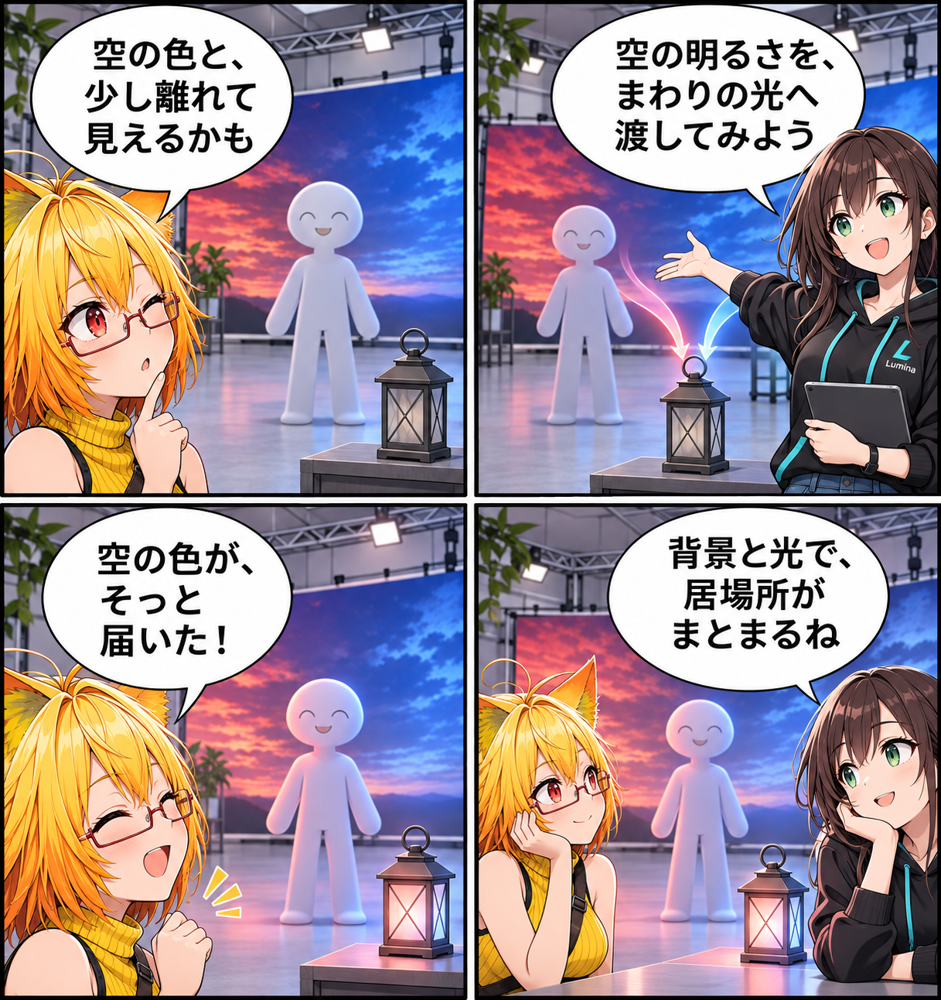

2026.11.26 / Feature Spotlight
閑話休題：空の色から、スタジオの光を整える
背景のSkyboxが持つ色と明るさを、スタジオの周囲光へ反映する既存のAdaptiveGI機能を紹介します。
今回は、前日と比べて有意な開発進展を確認できなかったため、現行実装の機能紹介へ切り替えました。集計期間は2026-11-25 03:00:00 JSTから2026-11-26 02:59:59 JSTまで、対象はViewerの
main です。集計終了時点のHEADは c33733a41be121b814a1732df8c9eae089ace2ea、対象コミットは0件です。未コミット差分は期間内の実装事実を確定できないため実績に含めていません。紹介内容は現行実装で確認できたAdaptiveGIに基づきます。
背景の光を、周囲の明るさへ
VRASでは背景（VBG）のSkyboxを環境光として評価し、空・地平線・地面の色や明るさを周囲光へ反映できます。方向ごとの差も扱うため、背景が単色ではないときも、シーンの雰囲気に沿った光を作る土台になります。
便利になる場面
昼の空、夕景、色味の強い背景などに切り替えたとき、背景だけを変えて照明を一から組み直す手間を減らせます。撮影前に背景とアバターのなじみを確かめたい場面で、まず環境の明るさを合わせる入口になります。
仕組みと制約
Skyboxの低周波な色と明るさを参照して周囲光を作ります。これは背景に置かれたすべてのライトを置き換える機能ではなく、明示的に置いたライトや演出は別に扱われます。背景の見た目や素材次第では確認と微調整が必要です。
4コマの話
ろひが青と赤の空を見比べて、背景だけ替えるとアバターが少し浮くかもしれないと気づきます。ルミナが空の色を周囲の光へそっと渡し、最後は二人が背景になじんだアバターを眺める、静かな発見の寸劇にしました。
まとめ
AdaptiveGIは、Skyboxの色と明るさをスタジオの周囲光へ反映する既存の仕組みです。背景を選ぶことを、アバターが立つ空間の光を整えるきっかけにもできます。